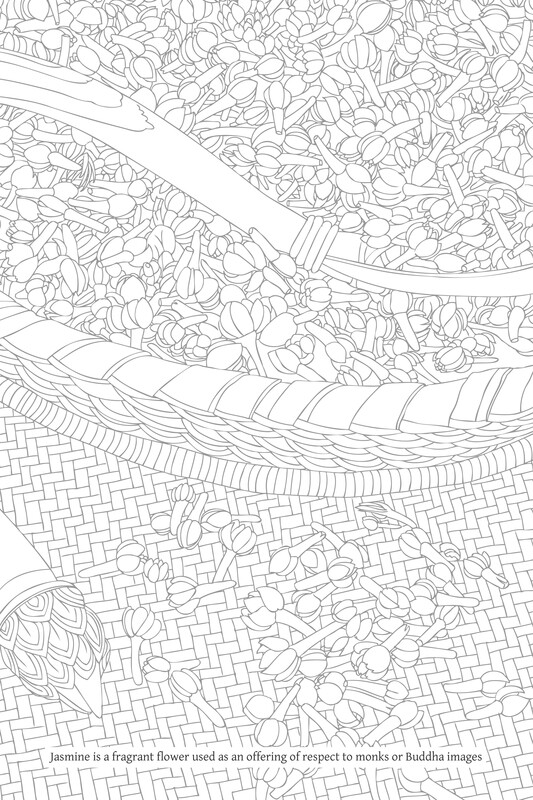

Author’s Postscript

This edition of Buddhadhamma is a revised and expanded edition of an abridged version with the same name that was published a decade ago, in 1971, when the author was known as Phra Srivisuddhimoli.
The original version of Buddhadhamma was included in a set of volumes titled Wan Waithayakon, a collection of academic texts published by The Promotion of Social Sciences and Humanities Textbooks Project organized by the Social Science Association of Thailand, on the occasion of the 80th birthday of His Royal Highness Prince Vanna Vaidhayakara, the Prince Naradhip Bhongseprabhan, on the 25th August 1971.
The original version of Buddhadhamma was published on another two occasions: the monastic community at Wat Plubplachai printed it as a tribute on the occasion of the royal cremation of Phra Silakhandhasobhita (Virach Siridatto) on Saturday 3rd April 1976; and the Department of Religious Affairs, Ministry of Education printed it as a tribute on the occasion of the royal cremation of Somdet Phra Vanarat (Sap Ghosaka Mahāthera) of Wat Sangveswitsayaram on 29th November 1987.
This most recent edition of Buddhadhamma contains approximately six times more text than the original edition. The original text has been revised and clarified; many passages have been expanded upon while other passages have been newly added. The result is that this edition is almost an entirely new book. In any case, there is much more new text than original text.
A brief background to the publication of the revised and expanded edition of Buddhadhamma is as follows: in August 1978 Prof. Rawee Pawilai, on behalf of the Dhamma-Mobilizing Group, contacted the Foundation for the Promotion of Social Sciences and Humanities, who held the copyright of the original edition of Buddhadhamma, so that he could republish it as a not-for-profit publication. Prof. Saneh Chamarik, committee chairman of the aforementioned foundation, considerately informed me as the author and asked for my permission.
A little while later, Prof. Rawee Pawilai came to speak with me about this matter. I expressed my appreciation but asked him if he would kindly delay the publication for a short period so that I could use the opportunity to make some revisions to the text. When I first wrote the book I had hurried to meet the deadline; moreover, in the seven years since the first publication I had come up with many new ideas to add to the text. Prof. Rawee Pawilai was graciously obliging even though he had already made preparations, e.g. setting aside the necessary funds, for publishing the book. I estimated that the time required to complete the revisions would take three months.
At that time I had many unfinished book projects. Several months before, I had decided to focus on reviving work on the Buddhist Encyclopaedia, which I had started in 1964. To ensure this book’s completion I determined to refuse all speaking and teaching engagements until at least this one book was finished. The revision of Buddhadhamma was thus an additional task at the time when I had just finished approximately 190 pages of the Buddhist Encyclopaedia.
In any case, this revision was not completed within the estimated time; indeed this task was drawn out for three years until the present time. Instead of being a supplementary work, it became a primary work. Work on the Buddhist Encyclopaedia was suspended and all of my determinations in regard to that book were transferred to the revision of Buddhadhamma. {1144}
This revision which lasted three years instead of three months and became in a sense an entirely new project had several effects and repercussions:
-
Effects on the author: as mentioned above, the principal work on the Buddhist Encyclopaedia was interrupted. This in itself caused no harm, because I had already wanted to continue work on Buddhadhamma. It was simply a matter of switching priorities.
-
Effects on the persons wishing to publish the book: the faithful lay-supporters needed to be patient and to wait a long time. They also needed to shoulder the extra burden of finding increased funding, more than they had anticipated for publishing the original version of Buddhadhamma. The body of text increased considerably and the cost of publication increased with inflation. I ask forgiveness if this delay caused any hardship or difficulty, and I thank Prof. Rawee Pawilai for his goodwill and willingness to accept these extra burdens.
-
Effects on the book: initially, as a supplementary work, I intended to only make minor necessary revisions to Buddhadhamma and had thus estimated a time period of three months. I had not established a formal framework for these revisions. I began simply by making revisions in various places where it seemed appropriate. If some passages seemed too short, I would elaborate on them; if some subjects seemed to be missing I would write new text and insert it in the main text.
As time went by the project continued to expand. Some of the short sections in the original version became very long, while some sections originally considered long became relatively short. Some of the new material was longer than the original material. Some of the added material in later chapters was written before adding material to earlier chapters. Some material which could potentially be expanded upon at length was left unchanged. Chapter 3 on the Three Characteristics was left almost entirely unrevised; this was similarly the case with chapter 4 on Dependent Origination.
Although additions were made dispersed throughout the main text and I had not prepared a new framework for the book before making revisions, a framework was nonetheless preserved. The revisions were all made in the context of a larger comprehensive framework already set down in the original book and held in the author’s mind. All the additions were made to fit with this original template.
There may be some minor discrepancies in the text. For instance: some of the chapters may be shorter or longer than the others and thus appear as lacking symmetry; some subjects may be repeated in different places; and the spellings of some Dhamma terms, although correct, may vary from place to place, thus catching the eye or appearing untidy.
This book is full of source material and scriptural references, which some people will see as excessive. The reason for this is not an attachment to scripture or a clinging to the belief that simply because something is contained in the scriptures it must be invariably true.
Without a doubt, the ancient scriptures, especially the ones written by subsequent generations, contain errors through mistaken or defective recording. Nonetheless, the scriptures are a vital foundation and source of information. Their importance can be measured according to their traditional status and period of origin. (See Note Order of Authority)
If we acknowledge that personal opinion is important, we cannot deny the importance of the explanations found in the commentarial texts. The compilers and authors of these texts were most likely learned and wise individuals many of whom were representatives of Buddhist scholarly circles in their respective time periods. Moreover, they lived in an era much closer to the Buddha’s life than we do. {1145}
Quoting scriptures is a way of acknowledging the importance of that which has value. If the scriptures were compiled by later generations, we show our willingness to listen to the opinions of these authors. For those matters requiring evidence or confirmation, we can often find this evidence in the scriptures, thus ending any further dispute or debate. For those matters in need of a wise person’s opinion or perspective, we can find such opinions and analysis in these texts.
Buddhism teaches to refrain from believing in something conclusively and unquestionably simply because it is quoted in the scriptures, i.e. it teaches to refrain from gullible and naive belief in scriptural authority. Some people interpret this to mean that Buddhism teaches to disbelieve or reject scripture.
In fact, both believing and rejecting scripture without applying discriminative knowledge (vicāraṇa-ñāṇa) can easily be a form of credulity and gullibility, i.e. one believes naively or disbelieves naively.
To quote the scriptures once more, the elders of the past arranged the order of importance of factual evidence as follows:
āhacca-pada (the suttas or passages cited from the Pali Canon);
rasa (texts or material corresponding to the suttas);
ācariya-vaṁsa (= ācariya-vāda: words of the teachers);
adhippāya (personal interpretations);
kāranuttariya (rational explanations consisting of the four previous sources of information).
See: Miln. 148.
At the time of the commentaries this order of importance was thus:
sutta (= Tipiṭaka);
suttānuloma (passages or material corresponding to the suttas);
ācariya-vāda (= atthakathā; the commentaries);
attanomati (personal interpretation).
see: DA. II. 567.
See also the principle of the four great standards (mahāpadesa): D. II. 124; A. II. 167-8; and as described in the Vinaya: V. I. 250-51.
A thorough and faultless rejection of scripture would include preventing vague and ambiguous repudiation and disbelief. Before judging, or even renouncing, scripture, one should first study these texts comprehensively to see exactly what their authors say. How we want to then perceive or establish a different opinion from these texts is up to us. Those authors who have passed away in the past are at a disadvantage; they are unable to stand up and express their opinions or engage with us in debate. For this reason we should first investigate and allow these authors to speak through their texts in an uninterrupted way. Whether we then agree or disagree with what they have to say, at least we have given them due justice.
Another objective for presenting so much scriptural source material, or using the scriptural references as an anchor and chief support, is for this book to become independent from the author. As much as possible, the author can also be independent from the book. The author has prepared this book in the capacity of a scholar. My task has been to research and compile the essence of Buddha-Dhamma and submit it to the reader. If the content submitted is correctly analyzed and authentic, the author’s duty is finished and he can disappear. The readers no longer need to pay him any attention. They will be absorbed in the content of the book and will be reflecting on how it affects their lives. If, however, aspects of the book lack authenticity or validity, the author is not yet entirely freed from responsibility. Therefore, the degree of distance and independence between the work and the author is one way of gauging the success of this book.
From what I can gather, I have not been able to completely gain such independence, but I simply wish to express my wish and objective. Having presented the essence of Buddha-Dhamma, it is as if the author has led the readers to have an audience with the Supreme Teacher, the Lord Buddha. They can then forget about the author. Instead, they can focus on listening directly to the Buddha’s teachings in his own words and reflecting on them.
Because this book gives emphasis to scriptural evidence, it focuses more on general principles and methods of practice than first-hand or direct practical application of the teachings. This is because the precise details of practice depend on various surrounding conditions and are related to the specific requirements and suitable methods for each individual.
Having said this, it is precisely these general principles and methods of practice that are the source and inspiration for detailed aspects of Buddhist spiritual practice. When one clearly understands these principles and methods, one is then able to establish a detailed, well-tailored practice suitable for oneself. Moreover, one possesses the means for confirming the correctness and validity of one’s practice.
In the original edition of Buddhadhamma, the source material or scriptural references were selected almost entirely from the Pali Canon, i.e. the Tipiṭaka. There are only very few references from later texts, e.g. the commentaries.
In this revised and expanded edition of Buddhadhamma, the scriptural references from the Tipiṭaka are still considered the foundation and guideline. But here many scriptural references to later texts have also been included, so that students of Buddhism become aware of them and can use them as food for thought. If one is not careful, however, mixing in these opinions and interpretations contained in later scriptures, e.g. the commentaries, can have detrimental effects. The true and genuine teachings by the Buddha we consider to be the Buddha’s words recorded in the Pali Canon – the Tipiṭaka. Later interpretations are seen simply as supplementary teachings providing greater clarity, and only those teachings consistent with the Pali Canon are approved and endorsed. {1146}
Many general books on Buddhism do not provide scriptural references and thus potentially create confusion or misunderstanding for the readers. Readers may assume that the accounts from later scriptures or the commentarial interpretations are the original and authentic teachings by the Buddha. Sometimes even the authors of these books harbour misunderstandings. This matter of providing source material in order to avoid confusion thus requires care.
An interesting example is that some Abhidhamma students understand that the teaching on Dependent Origination (paṭiccasamuppāda) – or the mode of conditionality (paccayākāra) – applies to a long interval spanning over three lifetimes, and they believe that this interpretation accords with the Abhidhamma. The opposite, however, is true: the actual Abhidhamma presentation of Dependent Origination (i.e. from the Abhidhamma Piṭaka) pertains to a single mind-moment occurrence. The interpretation of Dependent Origination as a process spanning three lifetimes relies entirely on a model outlined in the Suttanta Piṭaka.
The explication of Dependent Origination as spanning three lifetimes is found in the commentaries and sub-commentaries of the Abhidhamma, which explains this process according to an analysis conforming to the suttas (suttanta-bhājanīya), which is also described in the Abhidhamma Piṭaka (this subject is elucidated in chapter 4 of this book).
Although many references to later scriptures have been included in this book, in order to prevent confusion and misunderstanding about source material, the quotes from the Pali Canon and those from later scriptures – along with the accompanying explanations in the text – are clearly distinguished.
Following are some important points on the subject of citing scriptural source material:
-
Those people familiar with Buddhist scripture will recognize from the abbreviations which volumes are from the Tipiṭaka and which ones are later scriptures. One simple guideline is that commentarial texts end with the letter ‘A’ (for atthakathā), whereas sub-commentarial texts end with the letter ‘Ṭ’ (for ṭīkā).
-
In the case where primary source material has been cited, it is unnecessary to quote secondary scriptures unless there is some special reason, for instance the latter texts provide supplementary clarification.
-
When drawing on a wide selection of source material, the texts are normally arranged according to category, collection, time of origin, etc. For instance, the quotations from the Tipiṭaka precede those from the commentaries, and the quotations from the commentaries precede those from the sub-commentaries. Quotes from the Vinaya Piṭaka normally precede those from the Suttanta Piṭaka; quotes from the Suttanta Piṭaka precede those from the Abhidhamma Piṭaka. Various quotes from the suttas are arranged according to collection (nikāya); quotes from the same collection are arranged according to volume. For example: Vin., D. I., D. II., D. III., M. I., M. II. ... Dhs. (Abhidhamma), Vbh. (Abhidhamma) ... VinA. , DA., MA. ... VbhA. ... VinṬ., etc. Exceptions to this are when a later text covers the specific topic at great length and is thus a key scriptural reference; in such a case this text may be placed at the beginning of all the references. Similarly, if the same passage is found in different texts, the references to these texts may be placed together.
Similar to the abundance of scriptural references, this book also contains a great number of explanatory footnotes. Some readers may find these to be disorderly or irritating, but I simply ask that you take into account those readers who may benefit from them.
The footnotes provide additional information to the content of the main body of text: this information, if one were to add it to the main text, may make the presentation of material too complex; it may be highly technical and only of interest to a small percentage of readers; or it is valuable information but is somehow incongruous with the main text. {1147}
The footnotes are especially helpful for people who wish to engage in more extensive research. Many of the footnotes provide references that are worthy of further study and help guide one’s pursuit of knowledge in a more detailed and comprehensive way. It is as if there are many smaller books subsumed within the larger one.
As this book gives great import to scriptural evidence it is normal that it inclines towards an academic approach, or one can say it directly emphasizes Buddhist technical knowledge. It focuses more on a doctrinal analysis than on the personal disposition of the readers.
This book is thus for students of Buddhism – for those people who wish to study Buddhism in depth, who are dauntless and resolute, and who wish to gain mastery of these teachings. It is not seeking out readers or trying to spark interest in people by persuasion or by being exciting and stimulating. It applies scholarly knowledge as a basis, rather than focusing on maximizing readership. Having said this, it is not overly difficult or abstruse for the general reader who is determined and aspires for knowledge.
As a scholarly book Buddhadhamma contains many Buddhist technical terms or Dhamma terms derived from the Pali language. This is difficult for those readers unfamiliar with Dhamma terminology or Pali words. But in order to truly understand the Buddhist teachings this is necessary and unavoidable.
With a true understanding of Buddha-Dhamma, if one were to use not even a single Pali word, one’s explanations and descriptions would constitute Buddha-Dhamma. Conversely, if one lacks true understanding, or one harbours misunderstandings, even if one were to speak using only Pali words, one’s speech would not constitute Buddha-Dhamma. Instead, it would be an expression of some form of confused or distorted belief.
For those people who share a common understanding, Pali vocabulary acts as a means for conveying ideas in a convenient way. And for those students of Buddhism intent on knowledge, if they have the patience to learn some Pali, this vocabulary helps as a medium for instruction, accelerating their understanding. If one does not use any Pali for instruction, then one needs to come up with some other form of Dhamma terminology using another language. This may create greater confusion.
For this reason language can either be a medium for realizing Buddha-Dhamma or it can act as a barrier blocking realization. Knowing this, one should use Dhamma terminology correctly and discerningly; one is thus able to benefit from it without attachment or obsession.
As mentioned earlier, the author of this book has written it as a scholar and student of Buddhism. I have therefore continually acknowledged and attended to the knowledge and reflections of others. Although I do not read a great number of books, and read quite slowly, this book Buddhadhamma is the product of many sources of knowledge and contemplation. Although I have generally not mentioned or specified these sources, I have depended on various things that I have read and listened to. They have prompted new ways of thinking and new frames of reference and have spurred me on to search for true understanding.
Many of the books that I have read, especially by authors outside of Thailand, contain content that one can call an attack or denouncement of Buddhism.
The reasons for these criticisms and attacks are varied: some authors criticize out of misunderstanding; some criticize out of ill-intent; some are well-intentioned but because their own views and opinions are not confirmed they react bitterly with displeasure; and some criticize aspects of Buddhism with good reason and justifiably.
Whatever the reasons are behind these criticisms, if rather than naively acquiescing or becoming indignant, we remain open-minded and consider these words of criticism carefully – according to the Buddha’s teaching on responding to praise and blame1 – we can benefit from any kind of criticism or slander. In fact, criticism is more useful than praise, because people praise us for things we do or have already done, whereas they criticize us for things that we are unable to do or have not yet achieved. Even if their criticisms are wrong or unjustified we are able to gain from skilful means of reflection. {1148}
Of these various forms of criticism and condemnation, some of them are immediately recognizable as misdirected and resulting from wrong understanding; some lead to new, beneficial perspectives; and some prompt self-examination or lead to an investigation into the truth.
Most often these criticisms, even if they are logical or partially correct, stem from confusion between the behaviour and conduct of Buddhists and the authentic teachings of the Buddha. The critics observe particular harmful or bad conduct by Buddhists and then focus on and criticize some aspect of the Buddhist teachings that seems to correspond with this conduct. It is rare that critics set upon the true, essential Buddhist teachings.
Buddhists can use these criticisms for self-inspection and then adjust their behaviour to accord with the true teachings. In terms of the formal teachings themselves, when one investigates and studies the teachings and one discovers a point of Dhamma that answers or dispels specific criticisms or accusations, one delights and rejoices in the excellence and brilliance of the Dhamma.
At the time of the Buddha one of his disciples uttered the following verse: Aho buddho aho dhammo aho dhammassa svākkhātatā (’Oh, the excellence of the Buddha! Oh, the excellence of the Dhamma! Oh, how supremely expounded is the Dhamma!’).2 Similarly, some of the venerable elders exclaimed: Aho dhammasudhammatā (’Indeed, the Dhamma is supreme!’).3
When this enthusiasm arises, there is a powerful wholesome desire to proclaim the merits of the Dhamma to others or to encourage others to witness and appreciate the excellence and nobility of the Dhamma, as can be seen in the utterances by faithful disciples in the Pali Canon:
So ahaṃ vicarissāmi
gāmā gāmaṃ purā puraṃ
Namassamāno sambuddho
dhammassa ca sudhammataṃ‘I myself shall travel about from village to village, town to town, tirelessly paying homage to the Awakened One and to the supreme Dhamma.’4
S. I. 215; Sn. 33, 31; Ap. 48, 376; cf.: D. II. 208, 221, 227.
Passa dhammasudhammataṃ
‘Come and admire the righteousness of the Dhamma,’ or ‘Come and behold! The Dhamma is a truly superb teaching.’
Thag. verses 24, 220, 270, 286, 302, 319, 410, 1039.
This enthusiasm and inspiration was an important catalyst for writing this book. And having written this book as a student of Buddhism, the act of writing has promoted my own personal studies. I have therefore been happy to respond to suggestions and disagreements, and have made amendments when informed of mistakes in the spirit of mutual kindness and goodwill and a shared love of the Dhamma, in order to bring this book to completion.
A common danger to spiritual development is that people harbour dubious beliefs and views, or unclear understanding, and maintain that it conforms to Buddhism. They then adhere to these beliefs or views in such an extreme or fervid way that they deceive themselves. Sometimes they are unwilling even to listen to the Buddha’s owns words, and may even reject or discredit them, claiming that they do not represent true Buddhism.
Maintaining an attitude of scholarship helps to prevent this danger. If one keeps an open mind and remains responsive to others, and one is emotionally and intellectually grounded, when one encounters something that contradicts or conflicts with a cherished view or opinion, one wishes to investigate the matter. One’s understanding of things becomes clearer and one gains new forms of knowledge, leading to true progress and development. {1149}
Another important subject to draw attention to is the use of Pali terms whose meaning has changed, deviated, or become obscured over the passage of time.
A key example is the term dhamma-paṭipatti (’Dhamma practice’), whose true meaning is ‘applying the Dhamma in one’s daily life’ or ‘acting in harmony with the Dhamma’. These days, however, ‘Dhamma practice’ tends to be defined as a specific step or stage of spiritual training, manifesting as a systematic procedure and followed according to some prescribed method. In this book I have sometimes used this term ‘Dhamma practice’ in this narrow sense. Readers should be aware of this distinction.
In the Thai language, one amusing example is the word seuksah (Pali: sikkhā) which is paired with the word patibat (= paṭipatti). Originally, the term sikkhā referred to the essence of spiritual practice (paṭipatti), or it referred to spiritual practice itself. Sikkhā is comprised of moral conduct (sīla), concentration (samādhi) and wisdom (paññā), which pertain directly to spiritual training and practice.5 The development of wisdom in particular is the supreme form of practice, leading to realization (paṭivedha). In Thai the word seuksah was later used to refer to study or education, even to rote or abstract learning, which can lead to incoherent or aimless thinking. The meaning of seuksah has thus been transformed to be equivalent to the term pariyatti (’formal learning’).
Another important distinction, although this does not have to do with a word whose meaning has become blurred or obscured, is between ‘Pali’ and the Pali language. ‘Pali’ on its own refers exclusively to the content of the Tipiṭaka, to be distinguished from later scriptures, e.g. the commentaries, sub-commentaries, etc..6 The Pali language refers to the language used to record and preserve the content of the Tipiṭaka; it is also referred to as Magadhi Prakrit (language of Magadha). The Tipiṭaka and the later scriptures, e.g. the commentaries, are recorded in the Pali language.7
In the original edition of Buddhadhamma, some topics are discussed only very briefly, to simply familiarize the readers with the basic concepts. I did not explain them in depth or point out relevant methods of practice. This revised and expanded edition has attended to these weaknesses and shortcomings. For instance, in the section of the original edition titled ‘Supporting Factors for Right View’, because I had the sense that the subjects of virtuous friendship and wise reflection were widely overlooked by Buddhists, I was preoccupied with underscoring the importance of these principles by quoting a large number of the Buddha’s words bearing witness to their significance. Aspects of these essential principles, including practical methods for applying them, however, were not described. This may have been ineffective because ten years later these subjects still do not seem to receive the attention they deserve. In this new edition of Buddhadhamma, more focus has thus been given to the essential principles and methods of practice. The sections dealing with these topics have in turn become more detailed and expansive.
There are many other similar principles, e.g.: aspiration for truth (dhamma-chanda), or wholesome desire (kusala-chanda), which is opposite to craving (taṇhā);8 mundane and transcendent right view; the middle teaching (majjhena-dhammadesanā) which is paired with the middle way (majjhimā-paṭipadā); and the three doctrines professing wrong view which run counter to the teaching on kamma.
Although this book was written with modern readers in mind, because of its emphasis on theoretical knowledge and scriptural source material, one can say that it acts as an interface between tradition and modernity. It is not a presentation of Buddha-Dhamma in a completely new format which would give chief importance to the psychological and intellectual disposition of modern people and use primarily modern parlance. For this reason, as mentioned already in the original edition of Buddhadhamma, in the future it may be advisable to write a companion volume titled ‘Applied Buddha-Dhamma’. {1150}
As mentioned above, this book gives great import to scriptural evidence and is thus full of Pali translations from the Tipiṭaka, the commentaries, the sub-commentaries, and other scriptural texts. As the primary text, I have translated the passages from the Pali Canon, i.e. the Tipiṭaka, directly from the Pali, although I have benefited much from consulting with the translations in the Thai Royal Edition Tipiṭaka. Only few later Pali scriptures have been translated into Thai. Of these, I have consulted with those that are reliable and, when appropriate, I have drawn from them to influence my own translations. In regard to scriptures not yet published in Thailand, or to other scriptural research tools not yet available in Thailand, I have occasionally relied on English or Burmese editions as an adjunct to this work. I wish here to document the benefit and value I have received from these various sources.
As mentioned above, this revised and expanded edition of Buddhadhamma came into being as a consequence of the faith and planning of Prof. Rawee Pawilai. As the catalyst for this project and the sponsor for this publication, Prof. Rawee Pawilai has thus been a key benefactor for the success and completion of this book.
This revised and expanded edition of Buddhadhamma is a sequel of the original edition of Buddhadhamma printed in 1971. The original edition originated from the planning organized by The Promotion of Social Sciences and Humanities Textbooks Project under the auspices of the Social Science Association of Thailand, with Mr. Sulak Sivaraksa as chief contact and coordinator. Having helped to plan and liaise at that time, he has thus also been greatly supportive for the production of this book.
Although I was already determined to revise and expand the Buddhadhamma text, if I had not received the invitation and been notified of the wish to publish, this project would have been delayed and would certainly not have been finished at this time.
For this reason, besides rejoicing in the pure intention of these two initiators and promoters on these two separate occasions, I also want to thank them for acting as an impetus for hastening me to complete this project.
For this publication, Khun Sunai Setboonsarng has been a vital volunteer for bringing this work to completion. He was the mainstay for coordinating and preparing the artwork, shouldering all responsibility in this area of the publication. He made many sacrifices and was very patient during this drawn out process, before it was finished. I thus wish to express my special gratitude to Khun Sunai Setboonsarng, along with his team of artwork assistants. At the beginning stages of publication, Khun Bancha Chalermchaikit provided useful supervision and helped lay a solid foundation for the present. The Met Sai Company provided generous support with the graphic design.
The devoted person who helped prepare and type the original manuscript of this book remains the same person who typed the manuscript of the original edition of Buddhadhamma, i.e. Khun Choldhi Dhammavarangkun, who has typed almost all of my previous manuscripts. I wish to express my gratitude for his considerable support.
I thank Ven. Tahn Chao Khun Visuddhisombodhi, Deputy Secretary-General of Mahachulalongkornrajavidyalaya University, who helped to proofread the manuscript during the five months that I was abroad.
At Wat Phra Phiren, where this book was written, there were many people who provided assistance on a daily basis, even sharing their food obtained on almsround with me. The result was that this extremely pressing writing project, requiring a complete devotion of time, proceeded smoothly throughout. In particular, I wish to mention Phra Mahā Insorn Cintāpañño, Phra Thawan Samacitto, Phra Chai Paññāpadīpo, Phra Kamnuan Siddhichando, and Mr. Saman Kongprapan. Besides helping with everyday affairs, Phra Mahā Insorn Cintāpañño also helped to sort the name and word cards alphabetically to prepare them for indexing.
Everyone mentioned here has shared the meritorious deed of assisting in the publication of Buddhadhamma, which is intended as a gift of knowledge and truth for the benefit of all. On this occasion, I give my heartfelt thanks for everyone’s united spirit and support.
Phra Rajavaramuni (Prayut)9
29 December 1981
D. I. 2-3.
M. II. 96; cf.: Ap. 392.
Thag. verses 479 & 486; Ap. 399.
See the related phrase buddhasubodhiṃ dhammasudhammataṃ saṅghasupaṭipattiṃ at: Nd. I. 359-60, 453; Nd. II. 42.
See: VinA. I. 225; MA. [3/147, 3/523]; AA. V. 33.
See the use of this word ‘Pali’ in e.g. the Visuddhimagga: Vism. 107, 450.
Trans.: in this English translation I have used the term ‘Pali Canon’ to refer to the former meaning, as the content of the Tipiṭaka.
I began to discuss dhamma-chanda and kusala-chanda in earlier works, on education and the philosophy of education, between the years 1973-75.
Now known as Somdet Phra Buddhaghosacariya (P. A. Payutto).